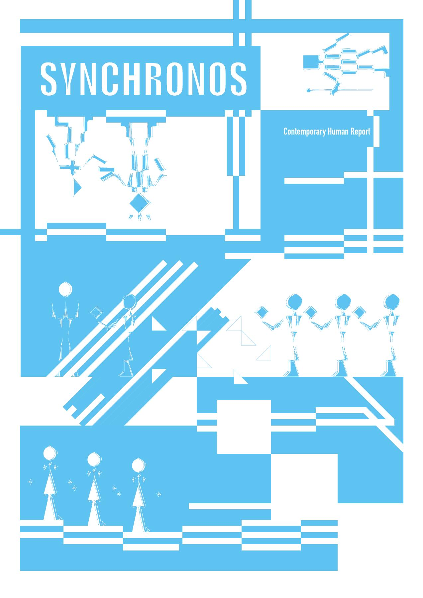

- CLASSIFICATION IN THE BOOK
- SOURCE PLATES
- ARTWORK SOURCE
SYNCHRONOS / POSTCARD ATLAS
ATLAS
Twelve postcards, one open field.
Follow the images. Find a new starting point.
01 / HUMAN02 / SYNDROME03 / SPECIES
DRAG TO EXPLORE / SCROLL TO ZOOM / SELECT A POSTCARD
01 / OVERSTIMULATIONPOSTCARD / ORIGINAL
+ OBSERVATION PLATE +
ARCHIVE / ORIGINAL EDITIONS
ARCHIVE
DRAG A PAGE / RELEASE TO TURN / ARROW KEYS

HOMO SYNCHRONOS / PERSONAL VARIATIONS
SELF-PORTRAIT
Six everyday choices.
A fictional form of your present.
+
+
OBSERVE.
ALTER. RECORD.
ALTER. RECORD.
SYNCHRONOS / GRAPHIC LABORATORY
Original postcard forms, open to a new composition.
Postcard AI artworks. Contour extraction, layered colour and deformation are web experiments.GRAPHIC FIELD GUIDE / SYNCHRONOS